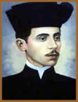

No Engenho Pau d’Arco, município
de Cruz do Espírito Santo, Estado da Paraíba, a
20 de Abril de 1884, nasce Augusto de Carvalho Rodrigues dos Anjos,
terceiro filho de Alexandre Rodrigues dos Anjos e D. Córdula
de Carvalho Rodrigues dos Anjos (Sinhá Mocinha). Augusto
e os irmãos receberam do pai a instrução
primária e secundária. Em 1900, Augusto ingressa
no Liceu Paraibano; compõe o seu primeiro soneto Saudade
e no ano seguinte publica um soneto no jornal "O Comércio",
no qual passara a colaborar. Em 1903, inscreve-se na Faculdade
de Direito da cidade de Recife, e dois anos mais tarde morre o
Dr. Alexandre, pai do poeta.
Augusto
escreve e publica em "O Comércio" três
sonetos que farão parte do Eu, livro futuro. Inicia
a Crônica paudarquense e participa em duas polêmicas.
Em 1907 conclui o curso de Direito e no ano seguinte transfere-se
para a capital da Paraíba para lecionar. Colabora no jornal
"Nonevar" e na revista "Terra Natal". No mesmo
ano, morre Aprígio Pessoa de Melo, padrasto de sua mãe
e patriarca da família, deixando o Engenho em grave situação
financeira.
Augusto leciona no Instituto Maciel Pinheiro, e
é nomeado professor do Liceu Paraibano. Em 1909, a União
publica Budismo moderno e numerosos poemas. Profere,
no Teatro Santa Rosa, um discurso nas comemorações
do 13 de maio, chocando a platéia por seu léxico
incompreensível e bizarro. Abandona o Instituto Maciel
Pinheiro. No ano de 1910 publica em A União, Mistério
de um fósforo e Noite de um visionário.
Casa-se com Ester Fialho. Continua a colaborar no "Nonevar".
Sua família vende o Engenho Pau d’Arco.
Sem conseguir licenciar-se, demite-se do Liceu
Paraibano e embarca com a mulher para o Rio de Janeiro. Hospeda-se
em uma pensão no Largo do Machado, mudando-se em seguida
para a Avenida Central. Termina o ano sem conseguir um emprego.
No início de 1911, Ester, grávida de seis meses
perde a criança. Augusto é nomeado professor de
Geografia, Corografia e Cosmografia no Ginásio Nacional
(atual Colégio Pedro II). Posteriormente nasce sua filha
Glória. Augusto começa a mudar constantemente de
residência.
Em 1912, colabora no jornal "O Estado",
e dá aulas na Escola Normal. Augusto e o seu irmão
Odilon custeiam a impressão de 1.000 exemplares do Eu,
livro recebido com estranheza por parte da crítica, que
oscila entre o entusiasmo e a repulsa. Acabou sendo seu único
livro publicado.
Nasce o filho de Augusto, Guilherme Augusto em
1913, e o poeta continua lecionando em estabelecimentos diversos.
Em 1914, publica O lamento das coisas na "Gazeta
de Leopoldina", dirigida pelo seu concunhado, Rômulo
Pacheco. É nomeado diretor do Grupo Escolar de Leopoldina,
para onde se transfere. Doente desde 30 de outubro, falece às
4 horas da madrugada de 12 de novembro, de pneumonia.
Em 1920, com organização e prefácio
de Orris Soares (amigo e biógrafo do autor), é publicada
pela Imprensa Oficial da Paraíba a 2ª edição
do Eu. Surgido em momento de transição,
pouco antes da virada modernista de 1922, é bem representativo
do espírito sincrético que prevalecia na época,
parnasianismo por alguns aspectos e simbolista por outros. Praticamente
ignorado a princípio, quer pelo público, quer pela
crítica, esse livro que canta a degenerescência da
carne e os limites do humano, só alcançou notoriedade
graças aos esforços de Orris Soares. A métrica
rígida, a cadência musical, as aliterações
e rimas preciosas dos versos fundiram-se ao esdrúxulo vocabulário
extraído da área científica para fazer do
Eu - desde 1919 constantemente reeditado como Eu
e outras poesias - um livro que sobrevive, antes de tudo,
pelo rigor da forma. Finalmente, em 1928 é lançada
a 3ª edição de suas poesias, pela "Livraria
Castilho", do Rio de Janeiro, com extraordinário sucesso
de público e de crítica.
Augusto se apóia nos termos e palavras duramente
científicas, e, ao contrário dos poetas latino-americanos,
não possuía obsessão das palavras suaves
e nem das vogais sempre doces. Não foi sem motivo que ficou
conhecido como o "Poeta da Morte". Era uma figura extremamente
sensível, introspectivo, triste, e companheiro. Sua figura
singela, seu jeito excêntrico de pássaro molhado,
com medo da chuva, enternecia, talvez devido à sua meninice
sem encantos.
Com o tempo, Augusto dos Anjos tornou-se um dos
poetas mais lidos do país, sobrevivendo às mutações
da cultura e a seus diversos modismos como um fenômeno incomum
de aceitação popular.
Por Spectrum
Obras
Disponíveis:
Poemas (Downloads)